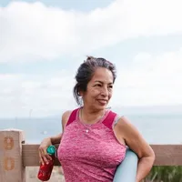

- Home
- Teachers
The people behind the mat.
Elias Grant
Yin and meditation teacher
11 years teaching
Elias came to yoga through burnout and stayed for the stillness. His classes are slow, soft and surprisingly powerful.
Leads

Jo Whitaker
Pilates and mobility teacher
8 years teaching
A former physiotherapist, Jo loves helping people move well and feel strong in their own bodies.
Leads
Maya Sol
Founder and lead teacher
14 years teaching
Maya opened Stillwater to make a studio that feels like a deep breath. She teaches with humour and a lot of heart.
Leads
Priya Anand
Beginners and prenatal teacher
9 years teaching
Priya is a qualified midwife as well as a yoga teacher. She is patient, practical and wonderful with first-timers.
Leads